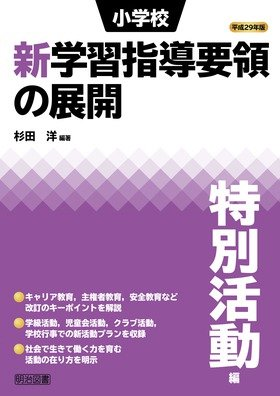
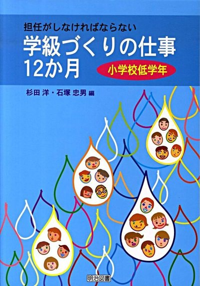
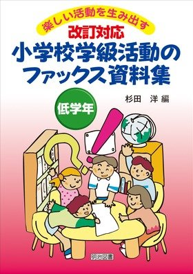

著書
単著3冊、編著・共著・監修書15点ほか。表紙を押すと、Amazon のページが開きます。
Amazon で見られる本
特別活動の教育技術小学館 特別活動の教育技術小学館・2013・単著
よりよい人間関係を築く特別活動図書文化社
特別活動の教育技術小学館・2013・単著
よりよい人間関係を築く特別活動図書文化社 よりよい人間関係を築く特別活動図書文化社・2009・単著
子どもがもえる
よりよい人間関係を築く特別活動図書文化社・2009・単著
子どもがもえる
活動づくり明治図書子どもがもえる活動づくり 中学年明治図書・1997・単著 特別活動で学校が変わる！小学館 特別活動で学校が変わる！小学館・2021・監修
特別活動で、日本の教育が変わる！小学館
特別活動で学校が変わる！小学館・2021・監修
特別活動で、日本の教育が変わる！小学館 特別活動で、日本の教育が変わる！小学館・2020・編著
小学校新学習指導要領の展開 特別活動編明治図書
特別活動で、日本の教育が変わる！小学館・2020・編著
小学校新学習指導要領の展開 特別活動編明治図書 特別活動で子どもが変わる！小学館・2011・編著
小学校教師のための生徒指導提要 実践ガイド明治図書小学校教師のための生徒指導提要 実践ガイド明治図書・2011・編著
保護者対応の仕事12か月明治図書保護者対応の仕事12か月明治図書・2011・編著
授業づくりの仕事12か月明治図書全3巻授業づくりの仕事12か月明治図書・2011・編著
学級づくりの仕事12か月明治図書
特別活動で子どもが変わる！小学館・2011・編著
小学校教師のための生徒指導提要 実践ガイド明治図書小学校教師のための生徒指導提要 実践ガイド明治図書・2011・編著
保護者対応の仕事12か月明治図書保護者対応の仕事12か月明治図書・2011・編著
授業づくりの仕事12か月明治図書全3巻授業づくりの仕事12か月明治図書・2011・編著
学級づくりの仕事12か月明治図書
アイデアブックフレーベル館全5巻クラブ活動アイデアブックフレーベル館・2010・監修 教室環境づくり
早わかり小学館教室環境づくり早わかり小学館・2008・編著
特別活動の教育技術小学館・2013・単著
よりよい人間関係を築く特別活動図書文化社よりよい人間関係を築く特別活動図書文化社・2009・単著
子どもがもえる活動づくり明治図書子どもがもえる活動づくり 中学年明治図書・1997・単著 特別活動で学校が変わる！小学館
特別活動で学校が変わる！小学館・2021・監修
特別活動で、日本の教育が変わる！小学館特別活動で、日本の教育が変わる！小学館・2020・編著
小学校新学習指導要領の展開 特別活動編明治図書
小学校新学習指導要領の展開 特別活動編明治図書・2017・編著 小学校新学習指導要領ポイント総整理 特別活動東洋館出版社小学校新学習指導要領ポイント総整理 特別活動東洋館出版社・2017・編著 特別活動で子どもが変わる！小学館特別活動で子どもが変わる！小学館・2011・編著
小学校教師のための生徒指導提要 実践ガイド明治図書小学校教師のための生徒指導提要 実践ガイド明治図書・2011・編著
保護者対応の仕事12か月明治図書保護者対応の仕事12か月明治図書・2011・編著
授業づくりの仕事12か月明治図書全3巻授業づくりの仕事12か月明治図書・2011・編著
学級づくりの仕事12か月明治図書
全3巻学級づくりの仕事12か月明治図書・2010・編著 小学校学級活動のファックス資料集明治図書
全3巻小学校学級活動のファックス資料集明治図書・2010・編著 クラブ活動アイデアブックフレーベル館全5巻クラブ活動アイデアブックフレーベル館・2010・監修 教室環境づくり
早わかり小学館教室環境づくり早わかり小学館・2008・編著
お店では扱っていない本
楽しい
学校生活文溪堂1〜6年楽しい学校生活文溪堂・児童用教材
学校生活文溪堂1〜6年楽しい学校生活文溪堂・児童用教材
子どもの心を
育てつなぐ
特別活動文溪堂子どもの心を育てつなぐ特別活動文溪堂・編著
育てつなぐ
特別活動文溪堂子どもの心を育てつなぐ特別活動文溪堂・編著
寄稿
『初等教育資料』や教育雑誌への寄稿をふくめた一覧は、準備中です。